Generate Audio Prompts using AI Text-to-Speech
This topic lists the features that support setting up prompts using the AI Text-to-Speech feature, and describes how to configure and generate natural-sounding audio prompts.
Introduction
You can use AI Text to Speech (TTS) to generate prompts and greetings for all the features listed below.
| Feature | Description | Illustration |
|---|---|---|
| Extension | Set a custom greeting for call forwarding destination when
editing an extension (Path: ). Note: The prompt will be
synchronized to the extension user's Linkus clients. The
user can also customize the Text-to-Speech prompt directly
on their Linkus clients, and the changes will be
automatically synced to the corresponding extension settings
on the PBX. |
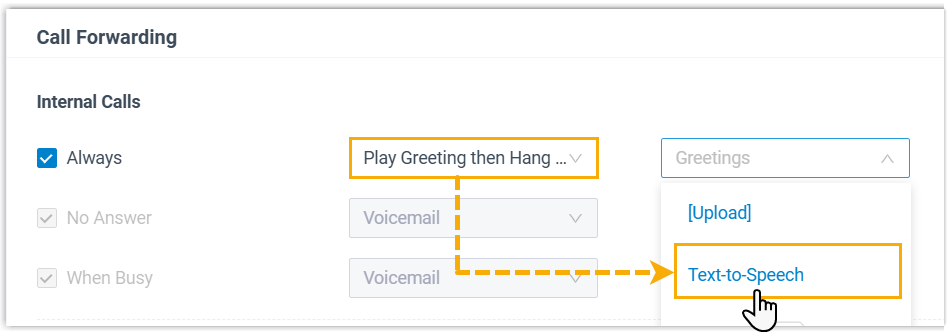 |
| Set greeting for voicemail when editing an extension (Path: ). Note: The prompt will be
synchronized to the extension user's Linkus clients. The
user can also customize the Text-to-Speech prompt directly
on their Linkus clients, and the changes will be
automatically synced to the corresponding extension settings
on the PBX.
|
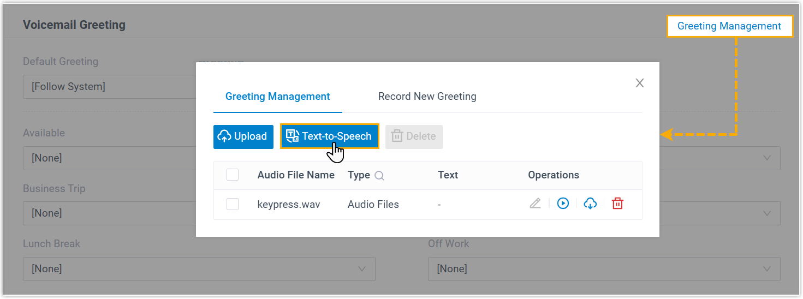 | |
| Inbound Route | Set prompts for inbound call destinations, including both default and time-based destinations (Path: ). |
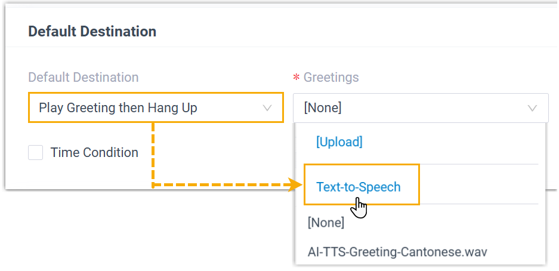 |
| Holidays | Set holiday prompts (Path: ). |  |
| Call Flow Designer | Set prompts for components in call flow processes (Path: ). | 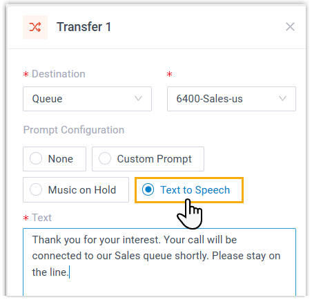 |
| Voicemail | Set a custom greeting for a group voicemail (Path: ) | 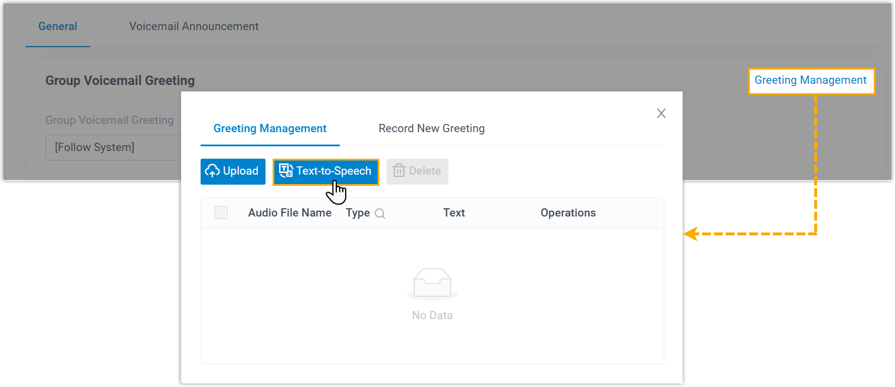 |
| Set a global greeting for voicemails (Path: ). | 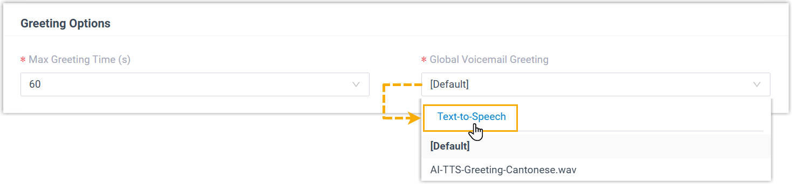 | |
| IVR | Set an IVR prompt (Path: ). | 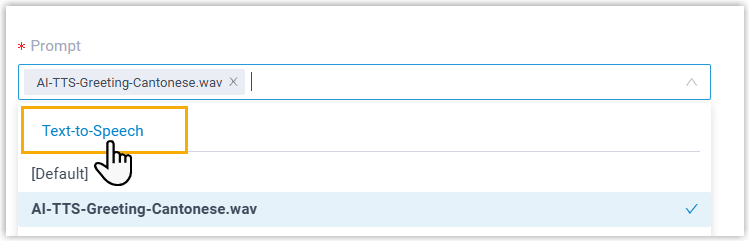 |
| Set prompts for IVR keypress destinations (Path: ) | 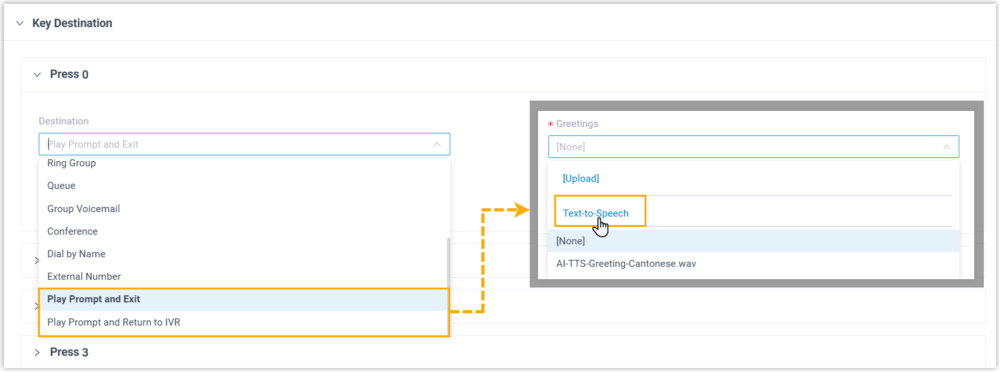 | |
| Ring Group | Set the following prompts for a ring group (Path: ).
|
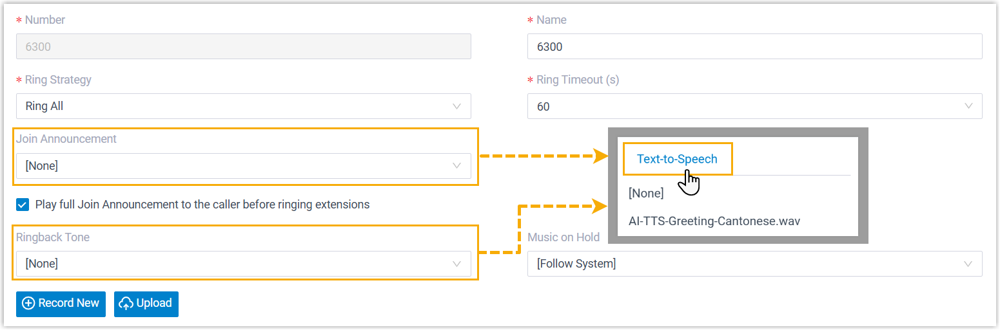 |
| Inbound Queue | Set a prompt for failover destination, including both default and time-based destinations (Path: ). | 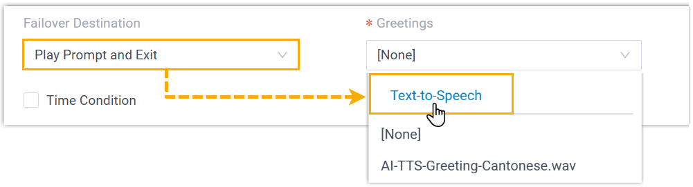 |
Set the following prompts for a queue (Path: ).
|
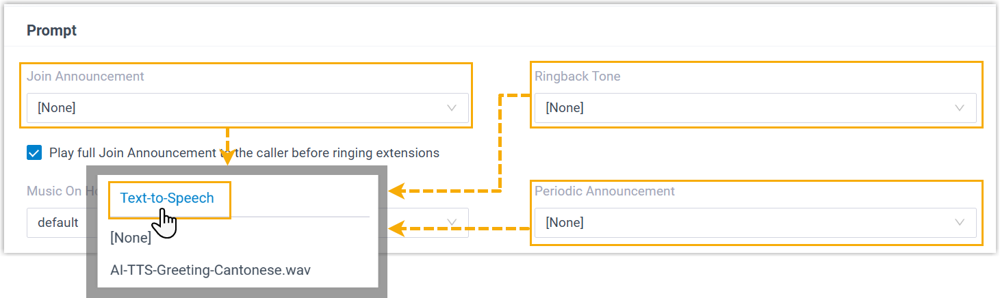 | |
| Set a prompt for satisfaction survey (Path: ). | 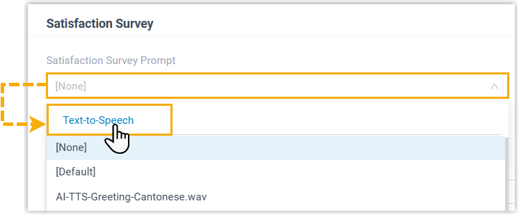 | |
| Set a prompt for the destination of key press event (Path: ). | 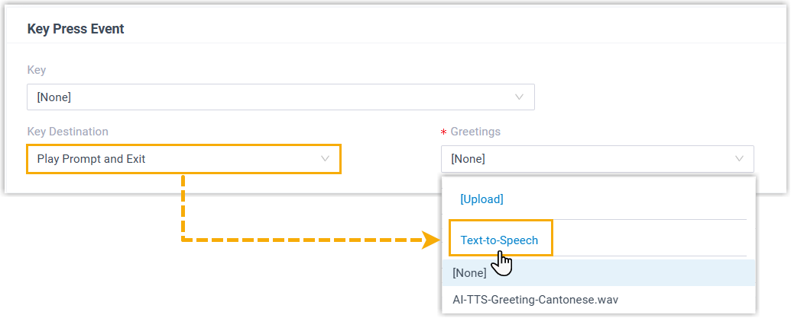 | |
| Outbound Queue | Set a prompt for failover destination, including both default and time-based destinations (Path: ). | |
Set the following prompts for a queue (Path: ).
|
||
| Custom Prompt | Create a new custom prompt (Path: ). | 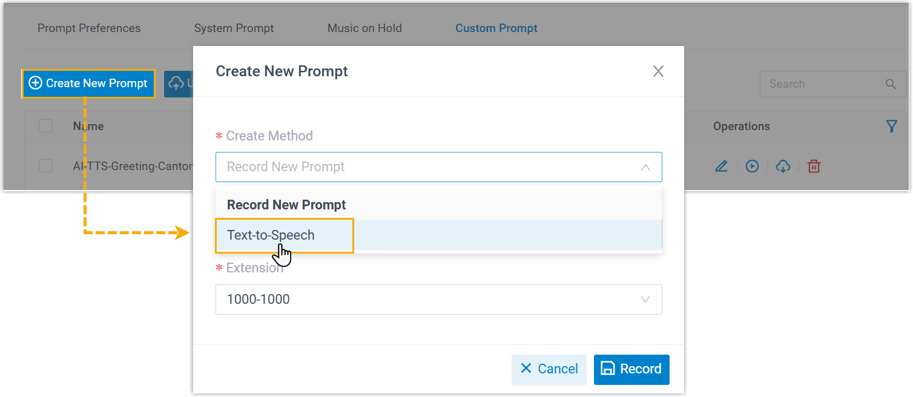 |
| PMS Integration | Set the voice prompt to be played when guests answer wakeup calls (Path: ). | 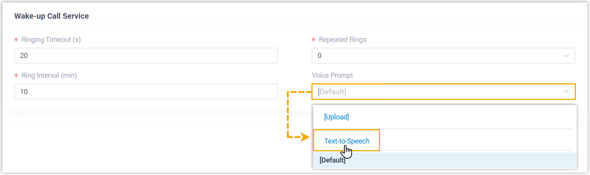 |
| Hotel Management | Set the voice prompt to be played when the guest(s) answer the wake-up call (Path: ). | 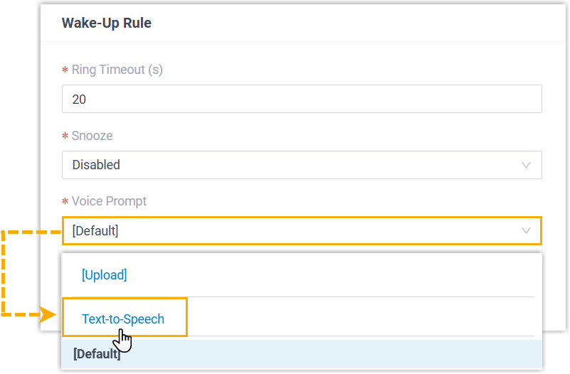 |
Prerequisites
You have enabled AI Text-to-Speech.
Procedure
- Access the corresponding menu of a specific feature, and click Text-to-Speech.
- In the pop-up window, specify the prompt details.
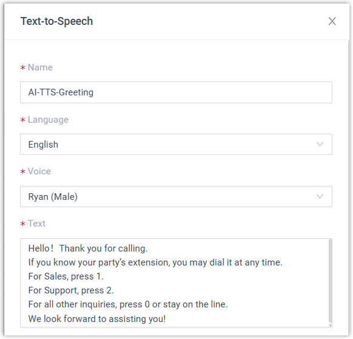
- Name: Specify a name for the prompt to help you identify it.
- Language: Select the language for the prompt.
- Voice: Select a voice profile for the prompt.
- Text: Enter the content to be converted
to audio.Note: The text content should be in the same language as the audio prompt.
-
Optional: Adjust audio settings and preview the prompt as needed.
- On the Speed,
Volume, and
Pitch sliders, adjust the desired
values to your preference.
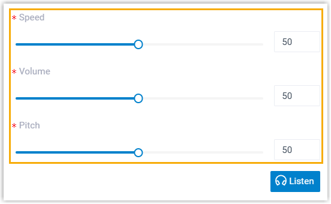
- To preview the audio prompt, click
Listen.
The button displays Generating, and then change to Play after the audio prompt is successfully generated.
- Click Play, then click
in the pop-up window to listen to the audio prompt on web.
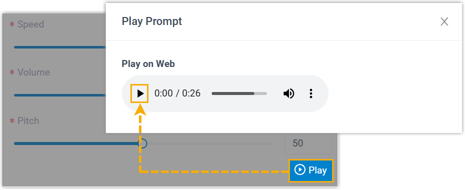
- On the Speed,
Volume, and
Pitch sliders, adjust the desired
values to your preference.
- Click Save.
Result
- The audio prompt is saved and applied to the specific feature.
- You can easily update the prompt by modifying the text or adjusting the
audio settings after it has been added.
- For extensions, go to .
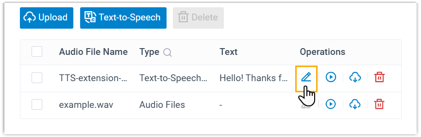
- For group voicemails, go to .Note: Prompts added in Voicemail Settings are synchronized and managed in the custom prompt list.
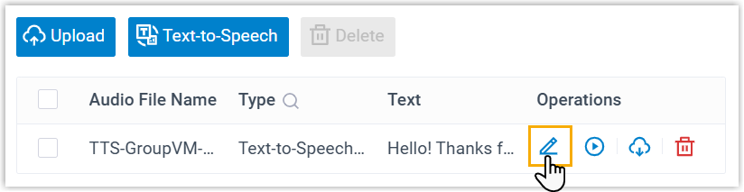
- For other features supporting AI Text-to-Speech, go to .
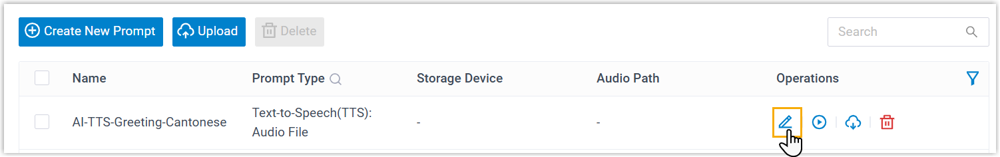
- For extensions, go to .